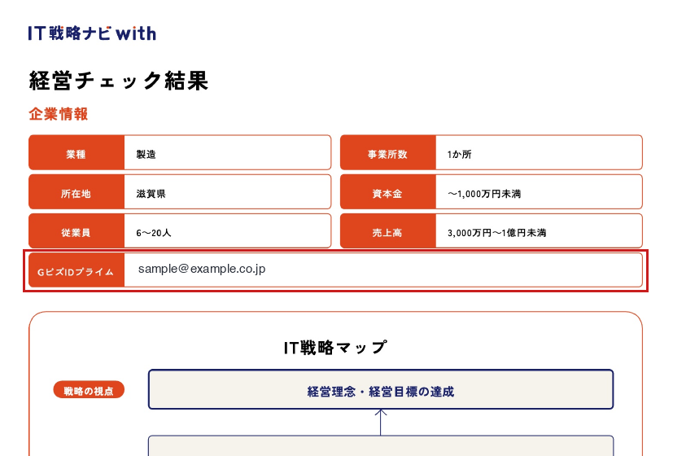

株式会社KMST
デジタル化・AI導入補助金2026
加点項目の確認ガイド
2026年9月15日
以下の3つの加点項目は、これまでの申請準備の中ですでにご実施いただいている場合があります。新たにお手続きいただく前に、まず「取得済みかどうか」を下記の方法でご確認ください。確認の結果、満たされていない項目だけ、あらためてご取得をお願いいたします（いずれも無料・15分程度です）。
3つとも共通のポイントは、補助金申請に使用しているGビズIDプライムと紐づいて実施されていることです。別のIDで実施したものは加点の対象になりません。
①②共通のご注意：実施の途中でGビズIDを入力する画面が表示されます。必ず申請用のGビズIDと紐づいたメールアドレス・企業名・担当者名をご入力ください。別のメールアドレスや略称の企業名で入力すると、加点として認められない場合があります。
確認チェックリスト
| 加点項目 | まず確認すること | 確認結果 |
|---|
| ① IT戦略ナビwith | パソコン内に「IT戦略マップ」のPDFがあり、1ページ目の「GビズIDプライム」欄に申請用GビズIDのメールアドレスが記載されている | □ 取得済み
□ 要再取得 |
| ② 省力化ナビ | パソコン内に省力化ナビからダウンロードした「解決策」のPDFがある | □ 取得済み
□ 要再取得 |
| ③ 成長加速マッチングサービス | ログイン後のトップページに「掲載中」の挑戦課題がある | □ 取得済み
□ 要再取得 |
① IT戦略ナビwith（デジwith）
確認方法
- パソコンの「ダウンロード」フォルダなどで、「IT戦略マップ」という名前のPDFファイルを探してください（実施時に「IT戦略マップ」という名前でファイルが自動生成されます）
- ファイルを開き、1ページ目「企業情報」の一番下にある「GビズIDプライム」の欄を確認してください
- そこに申請に使用しているGビズIDに紐づいたメールアドレスが記載されていれば、取得済みです
✔ 確認いただく箇所（1ページ目・赤枠の欄）

※ サンプルのため、メールアドレスは例に差し替えています。この欄が空欄の場合や、申請に使っているGビズIDと違うメールアドレスの場合は「要再取得」です。
ファイルが見つからない・メールアドレスが違う場合：お手数ですが再度ご実施ください。
IT戦略ナビwith を開く
申請用のGビズIDプライムでログイン → 選択式の質問に回答（約10分） → 表示された「IT戦略マップ」を
PDFで保存してください。
② 省力化ナビ
確認方法
- パソコンの「ダウンロード」フォルダなどで、省力化ナビからダウンロードした解決策のPDFファイルがあるか探してください
- ファイル名は「日付＿業種（課題の分類）＿解決策のタイトル」の形式で自動生成されます。
例：20260915_業種共通（バックオフィス業務）_販売管理システムで受発注業務を効率化
※「解決策」という言葉はファイル名に入りません。実施した日付（20で始まる数字）や課題名で探してください
- ファイルが見つかれば、取得済みです（実施した時期のダウンロード履歴もあわせてご確認ください）
ご注意：省力化ナビは画面で解決策を見るだけでは加点になりません。「解決策のPDFをダウンロードしたこと」までが要件です（2026年5月の公募要領改訂で厳格化されたポイントです）。PDFが見つからない場合は、念のため再度ダウンロードをお願いします。
PDFが見つからない場合：お手数ですが再度ご実施ください。
省力化ナビ を開く
申請用の
GビズIDプライムを入力して利用 → 業種・課題を選択 → 表示された「解決策」を
PDFでダウンロードし、保管してください。
③ 成長加速マッチングサービス
確認方法
- 下のリンクから成長加速マッチングサービスにGビズIDでログインしてください
- ログイン後のトップページ（挑戦課題の一覧）に、緑の「掲載中」と表示された課題があれば、取得済みです
成長加速マッチングサービス を開く
✔ 満たされている状態のサンプル（ログイン後のトップページ）
中小企業庁
成長加速マッチングサービス
挑戦課題
登録日 2026/06/12
更新日 2026/06/12
販路開拓
新規顧客の開拓に向けたデジタル活用の相談
コンタクト数 0 マッチング数 0
● 掲載中✎ 編集
※ この「掲載中」の表示が確認できればOKです。コンタクト数・マッチング数は0件でも問題ありません。下書きのまま・「掲載終了」になっている場合は「要再取得」です。
「掲載中」の課題がない場合：「挑戦課題」を1件ご登録ください。
販路開拓・資金調達・人材確保など、貴社の実際の経営課題で構いません。登録後、一覧でステータスが「掲載中」になっていることをご確認ください。
ご確認後の流れ
3項目それぞれの確認結果（取得済み／要再取得）を、担当までご一報ください。「要再取得」の項目は、本ガイドのリンクからそのままお手続きいただけます。操作にお困りの場合は、お電話・チャットにてお気軽にお問い合わせください。画面を拝見しながらご案内することも可能です。
締切にご注意ください：いずれの加点も交付申請の締切日（2026年9月29日 17:00）までに完了している必要があります。お早めのご確認をお願いいたします。